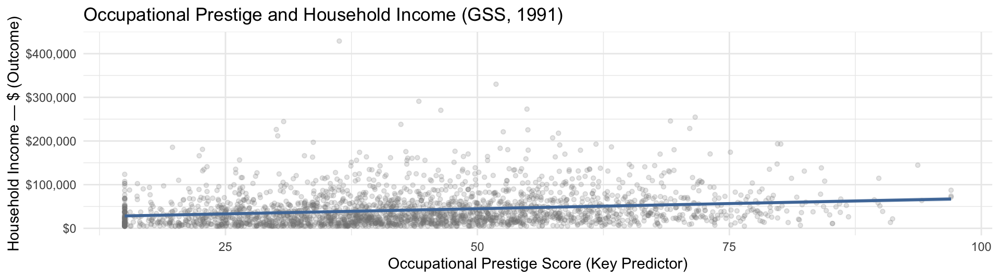

ggplot(attain_reg, aes(x = prestg80, y = income91)) +
geom_point(alpha = 0.2, color = "gray50", size = 1.2) +
geom_smooth(method = "lm", se = TRUE, color = "#4E79A7",
fill = "#4E79A7", alpha = 0.15) +
scale_y_continuous(labels = scales::dollar_format()) +
labs(title = "Occupational Prestige and Household Income (GSS, 1991)",
x = "Occupational Prestige Score (Key Predictor)",
y = "Household Income — $ (Outcome)") +
theme_minimal(base_size = 11)